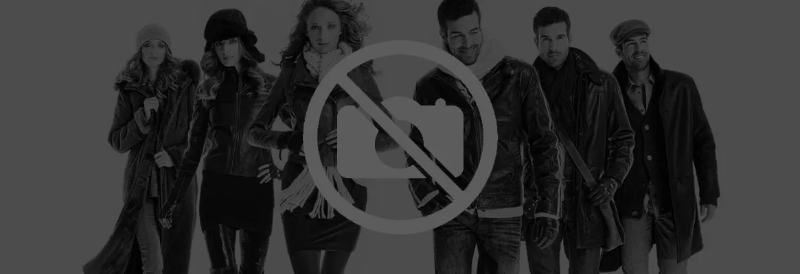

NYFW - About

New York Fashion Week, held in February and September of each year, is a semi-annual series of events (generally lasting 7–9 days) when international fashion collections are shown to buyers, the press, and the general public. It is one of four major fashion weeks in the world, collectively known as the "Big 4", along with those in Paris, London, and Milan. The Council of Fashion Designers of America (CFDA) created the modern notion of a centralized “New York Fashion Week” in 1993, although cities like London were already using their city’s name in conjunction with the words fashion week in the 1980s. NYFW is based on a much older series of events called "Press Week", founded in 1943.
It has consisted of numerous branded events, such as Olympus Fashion Week New York and MADE Fashion Week, and many independent fashion productions around town.
Producers of New York Fashion Week include IMG, The SOCIETY Fashion Week, FTL Moda in conjunction with Fashion Week Online, Style 360, Art Hearts Fashion, Style Fashion Week, and ASC Fashion week among others. A centralized calendar of citywide events (including those affiliated with WME/IMG) is kept by the CFDA, and was acquired from calendar founder Ruth Finley. The economic impact of New York Fashion Week is estimated at $887 million.
Summer Outfit for Women

What to wear this summer? It's a recurrent question that gives no rest to stylish people and fashion freaks. Unlike previous year when women’s wardrobe was full of elegant feminine and flattering contours outfits, this year women’s outfits are proceeding towards honest and simple approach to dressing.
If you have not updated your wardrobe yet, its perfect time to start putting away the heavy, drab winter clothes and dress up yourself in light and bright colors. So what are you thinking for? This summer comes with colors like white, grey, navy blue; browns are reassured and warm with violet tones.
Themes for this summer:
Active sports wear, dancer’s workout clothes are the inspiration behind “Get Sporty collection”. Marni’s close-fitting jackets were teamed with cropped and stripped leggings. • The designers like Thakoon, Rodarte, and Alexander McQueen seems to be inspired with beauty of roses and peonies this summer. The romantic vision is blossomed with lots of structured dresses, tops and gowns. • Eighteen century’s influence is coming back in 2007 with a punk feel. The feminine silhouette is getting large with eminent volume and layers with a couture-like aristocratic and royal appeal. • Swingy shape dresses and skirts are comfortable to wear in summer. The inspiration came from Yves Saint Laurent’s collection of 1958. • Golden and silver looks have gained importance in this season. This season group of fashion designers has not forgotten to use golden, pewter, and coppers colors in slinky dresses, coats, bags and shoes. • With some of these dresses in summer collection you need not wear jewelry as they come with embedded jewelry. Like, an outfit with jeweled neckline avoids the need to wear a necklace.
Colors:
Summer has come up with light colors. White is key color of the season. Colors like grey, navy blue have been used to give glamorous look. Bright colors have come back with red-orange and fuchsia. Cool, neutrals will always find a place in your summer wardrobes.
Outfits:
The baggy look dresses had been welcomed this season. I feel big, loose-fitting separates can be worn by both slim and slightly overweight women. You can put on perhaps a hat or chunky bracelet with your dress. I hope you will like it. This summer the length of blouses are little bit longer. It is an inch below navel and covers half of hips. For your second or third date you may wear black and white print border shift dress. The black and white combination doesn’t look contrast but it moved softer and transformed into shady grey and off white. How about trying the combination of white embroidery on black background or vice versa? Isn’t it great for dinner with your client!
In these sunny days black string bikini is funky and easy to wear. These simple sun dresses are perfect for the soaring temperatures without sacrificing style and fashion. To accessorize your outfits, try an over-sized bag with lots of details or bold, bug-eyed sunglasses. These trendy extras are sure to make a fashion statement. So it’s time to brush up your cabinet with some sporty, romantic, and sophisticated dresses. Have fun, be creative, and shine this season with these great outfits.